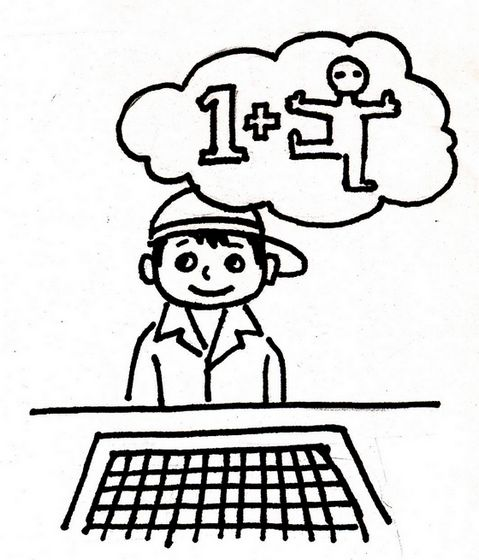

五子文化与知识(七)：启智静心 和谐交往
#1 五子文化与知识(七)：启智静心 和谐交往 作者：茗弈宽容 发表时间：2010-3-11 20:08:13
中国棋院在线讯 《五子棋知识》第七章讲述了五子棋能给人以哲人的启迪，能纯净美化人的心灵。它给弈者带来的是智力的开发，精神的愉悦，艺术的享受。七、启智静心 和谐交往
(一)启迪智慧
对弈五子棋的过程就是做大脑体操的过程。弈者每走出一步棋，便等于根据自己当时的局势给对方提出一个问题，让对方来解答。对方在很短时间内，要利用自己的智慧，借助自己下棋积累的经验，根据其对棋理的推断和对规则的理解，在脑中进行大局观的抽象思维和点、线、面、形及其之间联系的形象思维，经一系列独立思考之后，迅速作出判断，并果断地弈出一子。弈出之子，既是在解答对方的问题，又是给对方提出一个新的难题，要求对方解答。整个对弈过程，就是这样不间断地提出问题、解答问题的多次往返过程，同时也是弈者大脑在主动、不间断地运转的过程，既锻炼了智力，又增强了智慧。

图5：大脑体操
要知道，一个人能够精神集中，不走神的时间是有限度的，分散思维的出现总会是早晚的，无法控制的。低年级小学生在课堂上听讲大多情况下，能够集中注意力听讲的连续时间约是15分钟左右，年龄越小，分散思维越是强，趣味性越强，分散思维越显弱。下五子棋是大家感兴趣的事，有时为下棋，忘了吃饭时间，影响了自己休息或睡觉，也是心甘情愿的。五子棋属对抗性竞技，对弈双方都是在努力用棋盘和棋子为中介，去直接干扰和破坏对方实现自己目的的企图，并且是在竭力排除对方干扰和破坏下，去实现自己的目的。所以趣味性、竞争意识在激发着每个弈者的主动性、创造力。做大脑体操的整段时间内是不走神的，分散思维显弱，智力提高显强。经常下棋的人，会比其他人集中精神的时间长，这也是下棋人显聪明的缘由。大学中的8—1>8的流行说法，大概也是说，有兴趣，集中精神去做事会效率高，人会聪明多智吧！
(二)和谐交流
对弈五子棋过程中，不移子、不吃子，令人心态平和。求连接、无厮杀，减少了对局的火药味，很少出现争吵、赌气、伤感情的事。同是对抗性竞技，五子棋对弈，没有像足球、篮球、摔跤、柔道那样身体直接接触的对抗，而是用黑白子做中介，幽静、文雅地在棋盘上进行智力对抗。双方比的是串珠联合的技巧能力，胜时的五连形优态美。小小棋盘传递着视觉的善美，有限的棋盘传递的是无限的友谊、和谐。韩国人称五子棋为“情侣棋”不无道理，下五子棋有利于和谐情感的交流。
五子棋为平衡先后手子力，在规则上规定的着数很多，是别的棋项无法比拟的。“三手可交换”、“五手两打”、“指定开局”的规定，给五子棋技巧探索带来了广度和深度。禁手规则的设立，增添了对弈的攻防技巧性，也给弈者带来了特有的乐趣。白方不断引诱，逼迫黑方露出破绽，走出禁手。而黑方步步谨慎小心避开陷阱，为躲禁手，有些“好形状”也不敢走，这些都极具趣味性。
五子棋是休闲与竞争结合的完满体现。
(三)培养能力
对弈五子棋可以提高多种能力，如独立思考的能力，动手操作的能力，和别人合作的能力，快速反映的能力，抗干扰的能力和收集、综合信息的能力，这些能力恰恰是当今社会各类人才综合素质所需要的。
学下五子棋，对在职的公民是个能力的提高。对于学生来讲，是对将来服务社会，上岗就业良好素质积累的需要。对老年人来讲，是智力抗衰老的灵丹妙药。
(四)陶情怡性
对弈五子棋，有胜、有负、有顺境、有逆境。赢棋可体验到成功的喜悦，是培植自信的良好方法。输棋败下阵来，可催人奋进。爱迪生发明蓄电池的实验，到一万次还没有成功，但他说：“我没有失败，我只是发现了一万种不能运作的方式”。棋负并不代表失败，它是通往赢棋之路上的尝试和探索。有